Thoms Kühne <thomas@kuehne.cn>
Kinaseblender uses a heuristic search algorithm to find those combination of producers that produce the the maximum number of different products. For example, when used for experiment planing producers might be cell lines and products might be proteins.
Download the current version http://github.com/ThomasKuehne/kinaseblender/raw/master/kinaseblender-current.jar
Ensure that Java >= 6 is installed.
Depending on your OS installation double click on
kinaseblender-current.jar or execute java -jar
kinaseblender-current.jar in a shell.
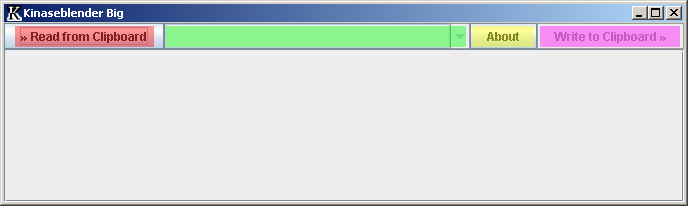
(red) Read from Clipboard: Tries to interpret the current clipboard's content. MS Excel, OpenOffice.org and plain text files with TAB separators are known to work. For the data format see Data.
(green) Selector: Choose any of the available views.
(yellow) About: Display the author's contact info and the license.
(magenta) Write to Clipboard: Copy the current view to the system clipboard.
All cells with blue text can be clicked on for further details.
The following chapters use sample.txt / sample.ods(OpenOffice.org) / sample.xls(MS Office).
| Farm | Garden | Pond | Steppe | Woods | |
| Grass | 1 | 5 | 0 | 0 | 0 |
| Lavender | 0 | 12 | 0 | 0 | 0 |
| Mistletoe | 0 | 0 | 0 | 0 | 8 |
| Peyote | 0 | 1 | 0 | 2 | 0 |
| Water Lily | 0 | 3 | 20 | 0 | 0 |
| Wheat | 40 | 0 | 0 | 0 | 0 |
| White sage | 0 | 8 | 0 | 0 | 0 |
The input data has to be formatted with sources(green), products(red) and the amount(blue). Amount cells with no content, non-positive numbers or non-numeric content are ignored. If the same source appears in different columns their data is merged(logical OR). The same is true for product rows.
Open any of: sample.txt, sample.ods, sample.xls. Select the content, copy it to the clipboard and press “Read from Clipboard” in Kinaseblender:
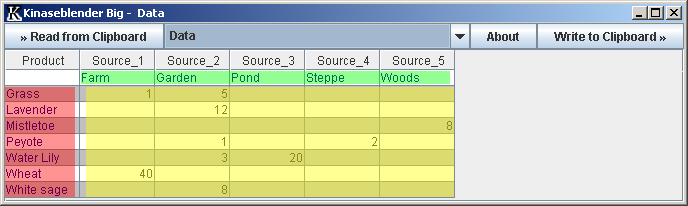
This view displays Kinaseblender's raw interpretation of the imported data.
(red) product names
(green) source names
(yellow) amount
Open the selector and choose “Source”:
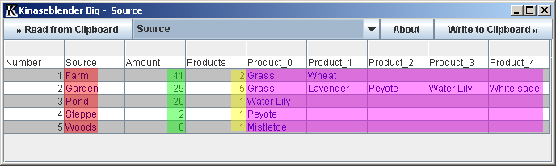
This view provides a short overview over the sources.
(red) source name
(green) total amount of products produces by this source
(yellow) number of different products produces by this source
(magenta) product names
Open the selector and choose “Products”:
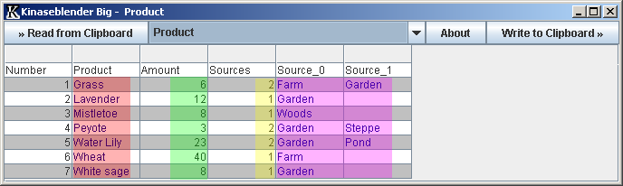
This view displays provides a short overview over the products.
(red) product name
(green) total amount of product produces by all sources
(yellow) number of different sources producing this product
(magenta) source names
Open the selector and choose “Required Sources”:
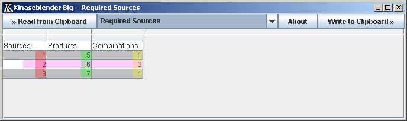
This view displays provides a short overview over how many sources are required to produce a certain number of different products.
(red) number of sources used for the combination(s)
(green) number of different products produced by this combination
(yellow) number of different combination having the same number of sources and products
(magenta) There are 2(yellow) different source combinations with 2(red) sources each producing 6(green) different products.
Open the selector and choose “Unique Count”:
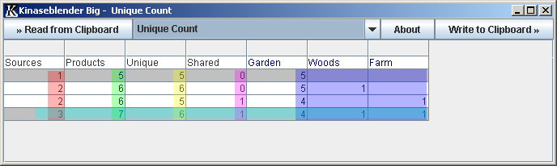
This view displays provides a detailed overview over the best combinations.
(red) number of sources used for the combination
(green) number of different products produced by this combination
(yellow) number of products produced by only one source in this combination
(magenta) number of products produced by more than one source in this combination
(blue) number unique products produced by the various sources
(turquoise) The best combination with 3(red) sources produce 7(green) different products. 6 (yellow) of the products are produced by only one source. 1 (magenta) product is produced by at least two sources. Garden, Wood and Farm contribute 4, 1 and 1 (blue) unique products to the combination.
Open the selector and choose “Unique Count”. Click on the last column header “Farm”:
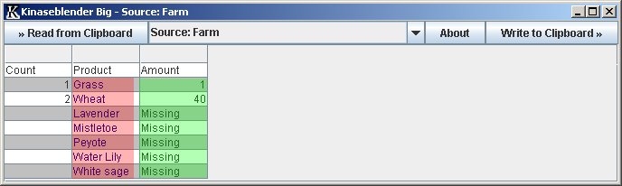
This view details a single source.
(red) name of the product
(green) amount produced by this source
Open the selector, choose “Products” and click on “Grass”:
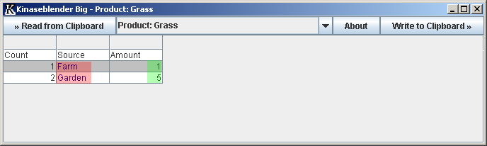
This view details a single product.
(red) name of the source
(green) amount produced by this source
Open the selector and choose “Unique Count”. Click on the second 6 in the “Products” column:
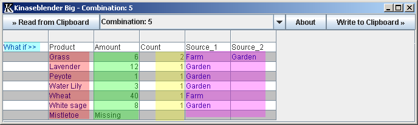
This view details a single combination.
(red) product name
(green) total amount produced
(yellow) number of sources producing this product
(magenta) number of the sources
(blue) number unique products produced by the various sources
(turquoise) Click on “What if >>” to use this combination as a basis for a “What If” view.
Open the selector and choose “What if”:
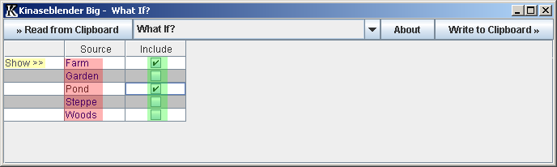
This view allows the user to create custom source combinations.
(red) source name
(green) checked sources will be included in analysis
(yellow) click on “Show >>” do display a Combination View for the selected combination.
Open the selector and choose “Next Best: 1 Sources”:
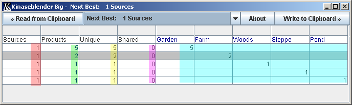
This view provides sub-optimal intermediate results from the heuristic search algorithm.
(red) number of sources used for the combination
(green) number of different products produced by this combination
(yellow) number of products produced by only one source in this combination
(magenta) number of products produced by more than one source in this combination
(turquoise) number unique products produced by the various sources